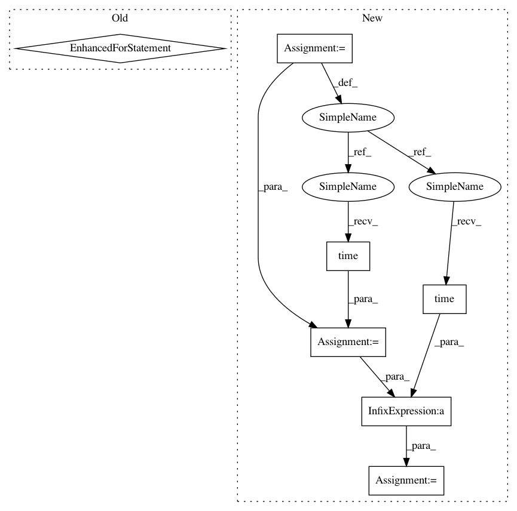

960a107ad419d2690e352972950e76495deb1ad6,scripts/detection/ssd/eval_ssd.py,,validate,#Any#Any#Any#Any#Any#Any#,63
Before Change
net.set_nms(nms_thresh=0.45, nms_topk=400)
net.hybridize()
with tqdm(total=size) as pbar:
for ib, batch in enumerate(val_data):
data = gluon.utils.split_and_load(batch[0], ctx_list=ctx, batch_axis=0, even_split=False)
label = gluon.utils.split_and_load(batch[1], ctx_list=ctx, batch_axis=0, even_split=False)
det_bboxes = []
det_ids = []
det_scores = []
gt_bboxes = []
gt_ids = []
gt_difficults = []
for x, y in zip(data, label):
ids, scores, bboxes = net(x)
det_ids.append(ids)
det_scores.append(scores)
// clip to image size
det_bboxes.append(bboxes.clip(0, batch[0].shape[2]))
// split ground truths
gt_ids.append(y.slice_axis(axis=-1, begin=4, end=5))
gt_bboxes.append(y.slice_axis(axis=-1, begin=0, end=4))
gt_difficults.append(y.slice_axis(axis=-1, begin=5, end=6) if y.shape[-1] > 5 else None)
metric.update(det_bboxes, det_ids, det_scores, gt_bboxes, gt_ids, gt_difficults)
pbar.update(batch[0].shape[0])
return metric.get()
if __name__ == "__main__":
args = parse_args()
After Change
net.set_nms(nms_thresh=0.45, nms_topk=400)
net.hybridize()
with tqdm(total=size) as pbar:
start = time.time()
for ib, batch in enumerate(val_data):
data = gluon.utils.split_and_load(batch[0], ctx_list=ctx, batch_axis=0, even_split=False)
label = gluon.utils.split_and_load(batch[1], ctx_list=ctx, batch_axis=0, even_split=False)
det_bboxes = []
det_ids = []
det_scores = []
gt_bboxes = []
gt_ids = []
gt_difficults = []
for x, y in zip(data, label):
ids, scores, bboxes = net(x)
det_ids.append(ids)
det_scores.append(scores)
// clip to image size
det_bboxes.append(bboxes.clip(0, batch[0].shape[2]))
// split ground truths
gt_ids.append(y.slice_axis(axis=-1, begin=4, end=5))
gt_bboxes.append(y.slice_axis(axis=-1, begin=0, end=4))
gt_difficults.append(y.slice_axis(axis=-1, begin=5, end=6) if y.shape[-1] > 5 else None)
metric.update(det_bboxes, det_ids, det_scores, gt_bboxes, gt_ids, gt_difficults)
pbar.update(batch[0].shape[0])
end = time.time()
speed = size / (end - start)
print("Throughput is %f img/sec."% speed)
return metric.get()
if __name__ == "__main__":
In pattern: SUPERPATTERN
Frequency: 3
Non-data size: 7
Instances
Project Name: dmlc/gluon-cv
Commit Name: 960a107ad419d2690e352972950e76495deb1ad6
Time: 2019-03-18
Author: xinyu1.chen@intel.com
File Name: scripts/detection/ssd/eval_ssd.py
Class Name:
Method Name: validate
Project Name: dmlc/gluon-cv
Commit Name: 960a107ad419d2690e352972950e76495deb1ad6
Time: 2019-03-18
Author: xinyu1.chen@intel.com
File Name: scripts/detection/ssd/eval_ssd.py
Class Name:
Method Name: validate
Project Name: tensorflow/tpu
Commit Name: 1acd2c4d48013ea1623ddbf9f28166a85404213a
Time: 2018-04-16
Author: bignamehyp@users.noreply.github.com
File Name: models/experimental/inception/inception_v3.py
Class Name:
Method Name: main
Project Name: tensorflow/tpu
Commit Name: 1acd2c4d48013ea1623ddbf9f28166a85404213a
Time: 2018-04-16
Author: bignamehyp@users.noreply.github.com
File Name: models/experimental/inception/inception_v2.py
Class Name:
Method Name: main